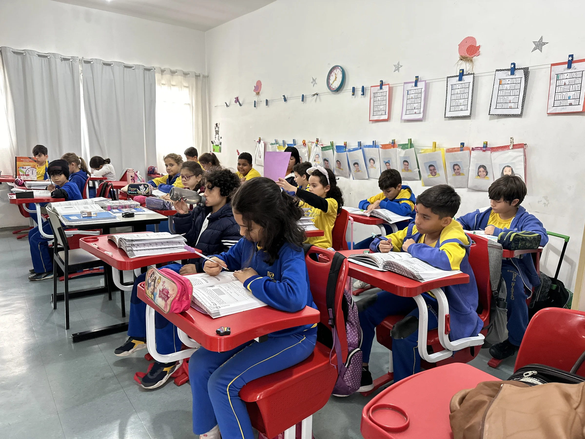
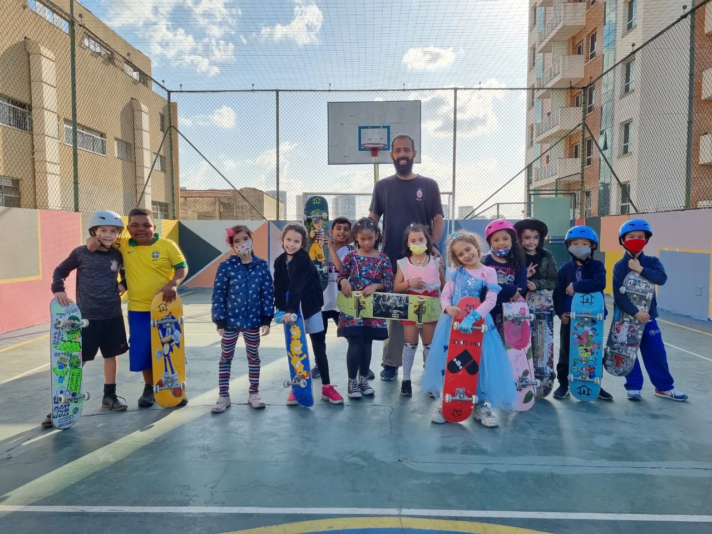

Princípios que orientam
Valores bíblicos presentes nas disciplinas, nas relações e nas experiências do dia a dia.

NA LAPA, DESDE 1997
Educação Infantil e Ensino Fundamental I com acolhimento, conhecimento e formação cristã.
A NOSSA ESSÊNCIA
Somos uma escola de Educação Infantil e Ensino Fundamental I, mantida pela Primeira Igreja Batista da Lapa. Nossa proposta une o aprendizado acadêmico ao desenvolvimento do caráter, em um ambiente próximo das crianças e de suas famílias.
Valores bíblicos presentes nas disciplinas, nas relações e nas experiências do dia a dia.
Material do Sistema Mackenzie de Ensino e atividades que respeitam cada fase da aprendizagem.
Programa Bilíngue Edify, com cinco aulas semanais e experiências ligadas a situações reais.
Educação de excelência para formar pessoas de maneira integral.
Oferecer educação de excelência e formação integral, fundamentadas na fé cristã e nos valores bíblicos, preparando os alunos para exercer a cidadania.
Buscamos desenvolver aspectos intelectuais, morais, sociais e espirituais. A metodologia cognitivo-interacionista valoriza a descoberta, a convivência e a construção do conhecimento.
A formação cristã inclui devocionais diários, ensino religioso e um ato cívico semanal. Como escola confessional batista, as atividades seguem sua identidade e seus valores.
Autogoverno, caráter, individualidade, mordomia, semear e colher, soberania e união são os sete princípios trabalhados pela escola.
Respeito, integridade, responsabilidade, cooperação e compromisso com a comunidade fazem parte dessa formação.
CADA FASE, UM NOVO MUNDO
Da primeira descoberta à construção da autonomia, uma trajetória que valoriza o aprendizado e a individualidade.
Brincar, explorar e aprender com experiências lúdicas, artes e descobertas que respeitam a infância.
Linguagem, matemática, natureza e cultura, artes, educação física, inglês com Edify e ensino religioso.
Construção do conhecimento com atenção próxima, atividades diversificadas e formação de valores.
Língua portuguesa, matemática, história, geografia, ciências, artes, educação física, inglês com Edify e ensino religioso.
Grade pedagógica e alimentação por lancheira.
Grade pedagógica, almoço, descanso e atividades recreativas.
Grade pedagógica, dois lanches, almoço, descanso e atividades recreativas.
No matutino e no estendido, a contratação do serviço de lanche é opcional. Consulte a secretaria sobre disponibilidade e contratação.
PORTAS ABERTAS PARA O FUTURO
Salas de aula, pátio coberto, playground e quadra na cobertura. Ambientes que acolhem o estudo, o movimento e a convivência.
10 salas de aula, sala multimídia, refeitório, cozinha, cantina e estacionamento. A mantenedora também dispõe de um salão de eventos para 400 pessoas.
Agende uma visita e conheça os espaçosALÉM DA SALA DE AULA
Esporte, arte e tecnologia ampliam as experiências de aprendizagem e ajudam cada criança a descobrir novas possibilidades.

Aulas que combinam desenvolvimento motor, disciplina, trabalho em equipe e superação de desafios.
Consulte a escola sobre turmas, horários e contratação das atividades extras.
Quero saber maisHISTÓRIAS QUE FAZEM PARTE DA NOSSA
… papel fundamental em minha formação pessoal e espiritual.
Marcia Miluzzi PachecoEx-aluna da EMC e mãe de aluna
Trechos dos depoimentos publicados pela escola.
ESCOLA E FAMÍLIA, LADO A LADO
Orientações e materiais reunidos em um só lugar, para facilitar o dia a dia das famílias.
Fale com a secretariaBaixe o arquivo correspondente ao ano do seu filho.
As matrículas começam na segunda quinzena de setembro. Durante o ano letivo, novas matrículas e transferências dependem da disponibilidade de vagas.
O kit matrícula pode ser solicitado à escola por e-mail ou presencialmente. Documentos necessários:
O uso do uniforme é obrigatório. As peças podem ser adquiridas na B&B Bordados, Rua Pio XI, 808 — Alto da Lapa.
Telefones: (11) 3022-2729 e (11) 95466-5047. Identifique as peças com o nome do aluno.
A escola não possui transporte próprio. Para consultar os profissionais indicados: Tia Mirian, (11) 99719-3878; Tio Elias, (11) 98375-9072. Confirme os itinerários e a disponibilidade diretamente e informe a secretaria ao contratar ou interromper o serviço.
A escola também mantém parcerias com igrejas, empresas e instituições. Consulte a secretaria sobre as condições e os descontos disponíveis.
VAMOS NOS CONHECER?
Conheça a proposta pedagógica, os espaços e a equipe da Escola Modelo Cristão. Nossa secretaria está pronta para conversar com sua família.
VISITE A ESCOLARua João Pereira, 74 — Lapa
São Paulo — SP
CONVERSE COM A SECRETARIA(11) 3853-0493secretaria@escolamodelocristao.com
Falar pelo WhatsApp